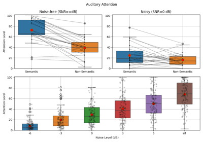

Note
Go to the end to download the full example code or to run this example in your browser via JupyterLite or Binder
Sinusodal Model : Synthesis : Audio¶
Analysis and Synthesis Models
Sinasodual Model: Audio
import requests
from scipy.io import wavfile
import numpy as np
import matplotlib.pyplot as plt
import spkit as sp
path = 'https://github.com/MLEndDatasets/samples/raw/main/HWD_HP_hum_1.wav?raw=True'
req = requests.get(path)
with open('downloaded_file.wav', 'wb') as f:
f.write(req.content)
fs, x = wavfile.read('downloaded_file.wav')
t = np.arange(x.shape[0])/fs
N=10
fXst, mXst, pXst = sp.sineModel_analysis(x,fs,winlen=3001,overlap=750,
window='blackmanharris', nfft=None, thr=-10,
maxn_sines=N,minDur=0.01, freq_devOffset=10,freq_devSlope=0.1)
xr = sp.sineModel_synthesis(fXst, mXst, pXst,fs,overlap=750,crop_end=False)
mXt, pXt = sp.stft_analysis(x,winlen=3001,overlap=750,plot=False)
fXt1 = (fXst.copy())*(mXst>0)
fXt1[fXt1==0]=np.nan
tx = t[-1]*np.arange(fXt1.shape[0])/fXt1.shape[0]
fig, (ax1, ax2,ax3) = plt.subplots(3, 1, gridspec_kw={'height_ratios': [1,2,1]},figsize=(10,6))
ax1.plot(t,x)
ax1.set_xlim([t[0],t[-1]])
ax1.set_ylabel('X: input')
ax1.grid()
ax1.set_xticklabels('')
ax2.imshow(mXt.T,aspect='auto',origin='lower',cmap='jet',extent=[t[0],t[-1],0,fs/2],interpolation='bilinear')
ax2.plot(tx,fXt1,color='k',lw=1,label='sin-tracks')
ax2.set_ylabel('STFT(x)\nFrequency (Hz)')
ax2.set_xticklabels('')
ax2.set_ylim([0,10000])
ax2.legend([f'sine-tracks (N={N})'])
ax3.plot(t,xr[:len(t)])
ax3.set_xlim([t[0],t[-1]])
ax3.set_ylabel('XR: recon')
ax3.grid()
ax3.set_xlabel('Time (s)')
fig.suptitle('Sinusoidal Model: Analysis and Synthesis : Audio')
plt.tight_layout()
plt.show()
Total running time of the script: (0 minutes 2.054 seconds)
Related examples



Auditory Attention: Plot Group Data
Auditory Attention: Plot Group Data